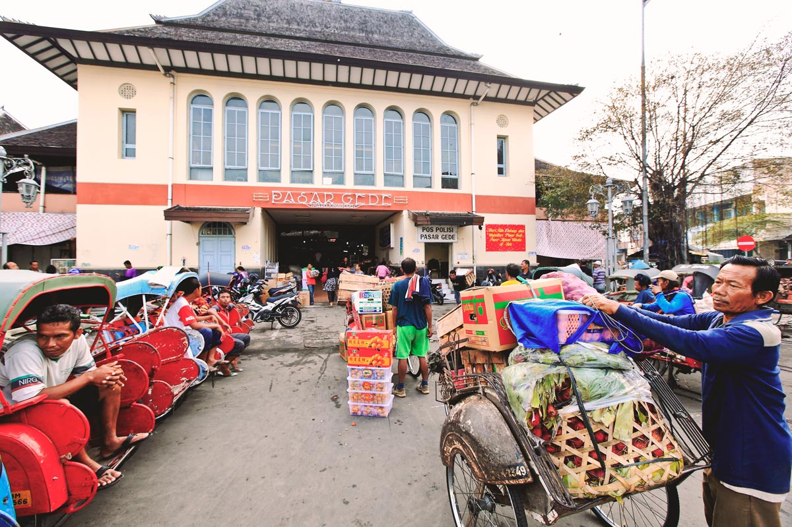
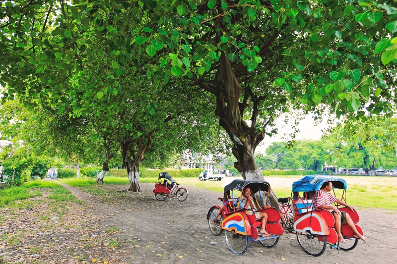

Solo City Vision Profile
Surakarta (Solo), Central Java, Indonesia
Kota Kita created a City Vision Profile for three mid-size Indonesian cities—Banjarmasin, Pekalongan, and Solo—that are widely recognized as having good governance, and inclusive and dynamic policies that target the poor. The City Vision Profile is a comprehensive summary of the city’s development vision and serves as an advocacy tool in local government efforts to promote medium-term investment priorities. The City Vision Profile — part of the City Development Strategy: “Making Urban Investment Planning Work” program, an initiative supported by the Cities Alliance, and implemented by UN HABITAT Indonesia and an office of the Indonesian Ministry of Public Works — uses a succinct and easy-to-read format that employs maps, diagrams and photos in order to make the city vision accessible to broad audiences and non-technical readers. It can be a one-stop reference for feasibility assessments and funding negotiations for specific projects, whether already prioritized in the Vision or proposed at a later stage.
The City Development Strategy aims to better link local governments with national government funding resources for the implementation of strategically prioritized projects, primarily for medium-term investments, which are both feasible and impactful. As the subjects of the City Vision Profiles, these three “champion” cities can serve as good examples for Indonesia’s nearly 500 cities, demonstrating how strong leadership and vision are essential to fostering comprehensive, inclusive and credible strategies.
The city of Solo is implementing an innovative development “Eco-Cultural City” vision around four components — strong cultural heritage, self-sufficient local economies, good-quality public spaces enhanced by a clean environment and adequate infrastructure.
The vision and its related strategies and plans for the future, which we detailed in our City Vision Profile, astutely position Solo’s assets as drivers for growth. This comes at a critical time, when Solo’s competitive place in Central Java and Indonesia is rapidly changing. Solo’s city development strategy focuses on four components: ecology, heritage, economy and structures for growth.
In our City Vision Profile, we gave a timeline of projects completed or in the pipeline for each of the four components. We also summarized the problems within each component, along with the actions taken and their outcomes, as well as provide snapshots of projects accompanied by completion dates, budgets and implementing agency.

Eco-Cultural City vision components:
Urban Ecology
Solo will be a city with clean rivers, green parks and open spaces. Corridor improvements and riverfront revitalization are two key projects for Solo, which provide flexible and public gathering space for residents and visitors.
Cultural Heritage
Solo will be a city of many cultural events, preserved heritage and neighborhoods with strong identities related to local production. Thousands of small-scale producers not only create their livelihoods through the local economy, they also continue long-standing traditions of artisanal crafts for which the city has become famous. Among them, batik textiles have become renowned throughout the world, including recent recognition by UNESCO, attracting tourism and merchants from afar. Solo's history as a royal court center with its accompanying music, dance and art forms is also visible throughout the city.
Local Economy
Twice as many people are involved in small-scale industries and cottage industries in Solo as there are in large businesses, and various city government initiatives support these economic activities. Solo serves as an employment center in Central Java and offers a broad range of services to the surrounding region. Implemented and planned corridor initiatives are connecting Solo’s many markets and commercial districts.


Structures for Growth
Solo will be a city that plans for new growth with sustainable infrastructure and transportation systems that connect to other cities. Because of Solo’s regional importance in the Central Java Province and as a National Events Center (PKN), municipal and national government are planning for infrastructure and transportation improvements. These include the already completed bus rapid transit system and airport terminal, as well as an increase in the number of waste collection sites.
In addition to these four components, poverty reduction is an overarching goal of the city’s vision. Pro-poor policies in Solo are reducing vulnerability to floods, creating livelihood opportunities, improving infrastructure in poor areas and engaging the poor in dialogue. A major component of the city’s pro-poor strategy has been the commitment of government officials to engage with poor communities. These initiatives are closely coordinated with the vision’s components.
A public workshop is organized for each funding proposal included in the City Development Strategy program. During 2011, the CDS planning team and Solo local government organized two projects related to the funding proposals for the Pasar Gede Revitalization project and Jalan Gatot Subroto Commercial Corridor Revitalization. Participants in these workshops included local community leaders, business owners and vendors, people who work in and use these spaces, and advocacy groups. The workshop culminated in a vote of priorities and a discussion to identify stakeholders who are already working on addressing these issues.